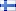

Division 1 back on it’s feet
I felt like writing something about the current division 1 scene. We will see we the regular clans but with some minor changes and one big surprise 3>

Fix, Fifi, Hlt and ofc the mighty Memil is back.
Firing Squad
Reppie, Razor, Spoink, Keyser plus it looks like Gemini saw daylight from under his rock and has decided to crawl out again. Some rumours say Riker has joined the forces but he claimed he was just playing with poor Razors feelings!
KOFF
Gamers, Scenic, Eh, Jukka still the same old smooth running machine (in case none of their computers break at least …)
Slackers 1
ParadokS, Murdoc, Dragon, Insane and recently Javve came back
Slackers 2
Zero, Krab, The Evil Dog, Mja, Cpe
 Suddendeath
Suddendeath
Bps, Ok98, Trash, Molecule. Lately we could find top dm3 Retic playing mix, will he be active again?
I see you thinking where are XantoM/Pascal (xterm)/Martin (valla)? is it true? is it??#$@@@!
Yes it is, the great old  Fragomatic are back featuring XantoM, valla, xterm and the interceptor!
Fragomatic are back featuring XantoM, valla, xterm and the interceptor!
A few teams you can’t forget and of which everybody hopes that they will play:
 Griffins Tappra Gossar
Griffins Tappra Gossar
Griffin, Mrlame, UL, Ermac, Dakoth, Slugfest. A few days ago Griffin, Dakoth, Ermac and Slugfest were playing 2on2 so who knows!
The Viper Squad
Ihminen, Blaze, Milton, Mirage. There have been rumours they will play for several months and despite the fact that Blaze said there isn’t enough activity it seems like there is still a slim chance they will compete.
Antiquad
Nussi, Harvester, Tuoppi, Mate, Darkki, even though they haven’t been around lately AQ has always been a contender in division 1, let’s hope they will be back in september.
Despite the fact that some of the earlier mentioned teams might not play it will be interesting to see where some players end up since it looks like  Lege Artis isn’t competing. If the individuals will still play it will leave players like Nabbe, Riker, Inferno, Slime, Rock, TCO (and who knows about the new to QW pro gamer Fox) on the player market, maybe they play as LA or form a team?!
Lege Artis isn’t competing. If the individuals will still play it will leave players like Nabbe, Riker, Inferno, Slime, Rock, TCO (and who knows about the new to QW pro gamer Fox) on the player market, maybe they play as LA or form a team?!
It looks like some hot action is coming up and I’m really looking forward to it!

If div1 gets active, that means that div2 will be active and get lots more of the old players to start speccing/trying to play a little -> soon start playing and we will have a really active qw scene this season? :F